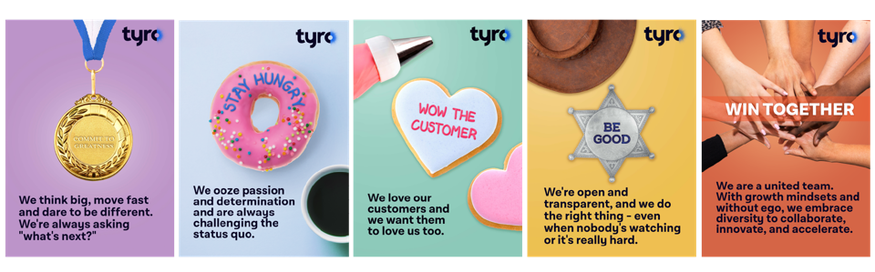

{{< /blocks/cover >}} {{% blocks/lead %}} The Tyro Delivery Framework (TDF) brings the right people together to collaboratively achieve key outcomes that prioritise and deliver value to customers. Although the audience of the TDF is intended for internal use, we decided to share publicly how we build our Technology at Tyro as a useful resource for others.{{% /blocks/lead %}} {{% blocks/lead %}}
{{% /blocks/lead %}} {{< blocks/section >}}
